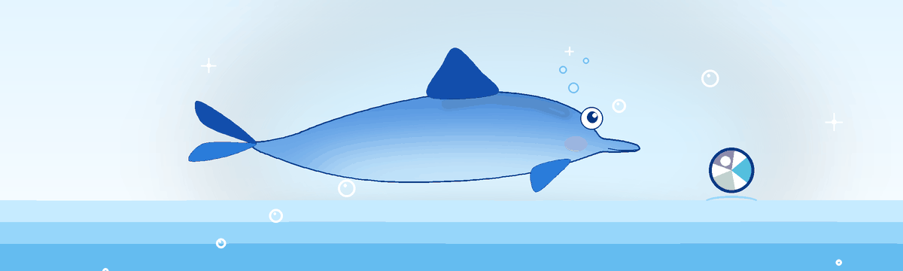
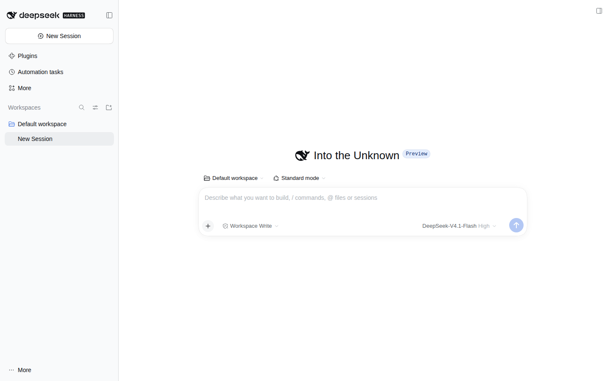

DeepSeek Harness,
packaged for Linux.
The official Electron desktop app with its bundled Node, pnpm, and Python runtime — as AppImage, .deb, .rpm, and .tar.gz. Auto-updating, checksum-verified, one command to install.
curl -fsSL https://github.com/butterpurse-dot/deepseek-harness-linux/releases/latest/download/install-linux.sh | bash
Installs to ~/.local. x64 and arm64. Community build, not an official DeepSeek project.


What you get
The real desktop application, not a browser wrapper. Everything ships in the package, so there is no system Node installation to manage.
Same Electron app
The upstream apps/desktop build, with the agent, plugins, workspaces, and dsh:// protocol intact.
AppImage, deb, rpm, tar.gz
Pick a single-file AppImage, a native Debian or Fedora package, or a portable tarball. x64 and arm64.
Automatic on x64
AppImages check GitHub Releases and update in place. dsh-update handles the same flow from a terminal.
Checksums every time
Every release publishes SHA256SUMS.txt. The installer verifies the download before installing.
Follows upstream
An hourly workflow rebases the Linux changes onto each new upstream release, tests them, and publishes.
Bundled runtime
Node, pnpm, and Python travel with the app. No system packages beyond FUSE for the AppImage.
Install
The one-liner picks the right architecture, verifies the checksum, and adds a desktop entry.
One command
curl -fsSL https://github.com/butterpurse-dot/deepseek-harness-linux/releases/latest/download/install-linux.sh | bashRequires curl and python3. Installs to ~/.local; pass --prefix /usr/local to change it.
Manual
# AppImage
chmod +x deepseek-harness-*.AppImage
./deepseek-harness-*.AppImage
# Debian / Ubuntu
sudo apt install ./deepseek-harness-*.deb
# Fedora / RHEL
sudo dnf install ./deepseek-harness-*.rpm
# Portable
tar -xzf deepseek-harness-*.tar.gz
./deepseek-harness-*/deepseek-harnessAppImage needs FUSE 2 on some distributions: sudo apt install libfuse2 or sudo dnf install fuse2.
Updates
x64 AppImages check GitHub Releases on startup and every six hours. The app asks before downloading and installs after you choose Install and Restart.
From a terminal
dsh-update --check # is a newer release available?
dsh-update # download, verify and install it
dsh-update --force # reinstall the current releasearm64 AppImages auto-update through the arm64 feed. A separate v<version>-arm64 release is also published for manual downloads.
Community build
This is a downstream packaging project, not an official DeepSeek product. The upstream desktop app targets macOS and Windows; this repository adds Linux packaging, CI, and installers.
Maintenance
Best-effort, no SLA, no active maintainer. Upstream releases are synced automatically; issues and pull requests are handled by the community when someone has time. If the sync workflow is blocked, it opens an upstream-sync issue and anyone may fix it.